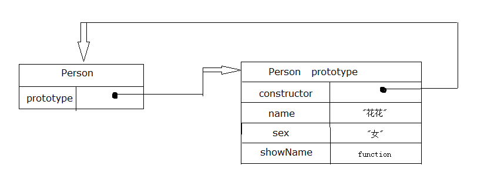
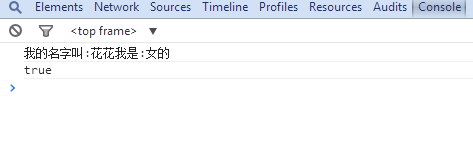
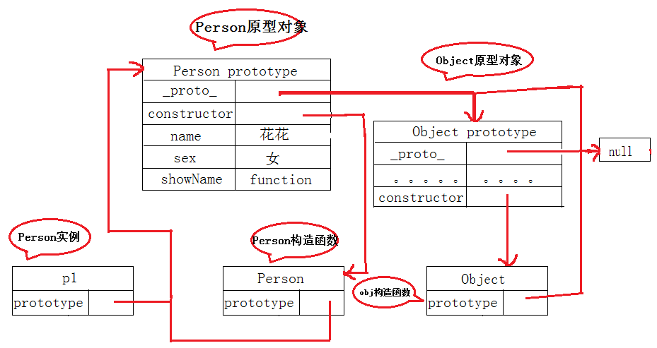
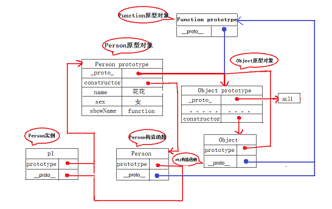
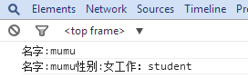
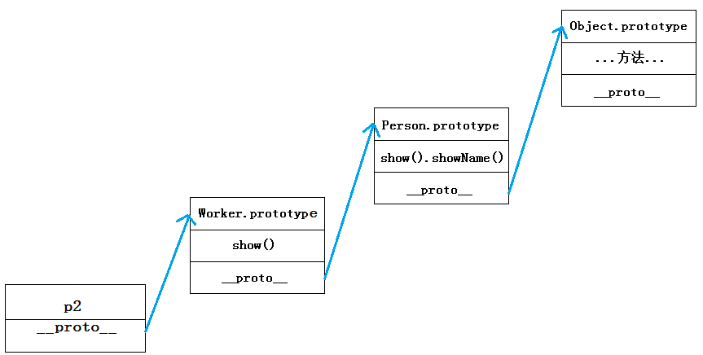

JavaScript原型与原型链学习笔记
一.什么是原型？
原型是一个对象，其他对象可以通过它实现属性继承。
简单的说就是任何一个对象都可以成为原型
prototype属性： 我们创建的每个函数都有一个prototype属性，这个属性是一个指针，指向一个对象，而这个对象包含可以有特定类型的所有实例共享的属性和方法。这个对象就是原型对象（也就是某个对象的原型所引用的对象）。
1.总之只要创建了函数，该函数都有一个prototype属性，指向函数的原型对象。

如上图，Person是一个函数，右侧的方框就是它的原型。
2.默认情况下所有原型对象都会自动获得一个constructor（构造函数）属性，这个属性包含一个指向prototype属性所在函数的指针。
简单来说prototype的属性值是一个对象（属性的集合，我们可以给他设置各种值），默认的只有一个叫做constructor的属性，指向这个函数本身。
下面就是一个原型对象的例子：

1 function Person() { 2 3 } 4 Person.prototype.name="花花"; 5 Person.prototype.sex="女"; 6 Person.prototype.showName=function(){ 7 console.log('我的名字叫:'+this.name+'我是:'+this.sex+'的'); 8 } 9 10 var p1=new Person(); 11 12 p1.showName();

所以在这个例子里：原型对象Person.prototype的constructor属性指向Person。
3.原型对象的内部还包括一个指针__proto__指向构造函数的原型对象。每个对象都有一个__proto__属性。
注意：Object.prototype是一个特例——它的__proto__指向的是null
这个__proto__是一个隐藏的属性，在FF，Safari和Ghrome支持。
如上面的例子，Person是一个函数，p1对象是从Person函数new出来的，这样p1对象就可以调用Person.prototype中的属性。因为每个对象都有一个隐藏的属性——“__proto__”，这个属性引用了创建这个对象的函数的prototype。即：p1.__proto__ === Person.prototype
下面在上面的例子中添加下面代码来验证一下：
1 console.log(p1.__proto__ === Person.prototype);//ture

结果为true证明他们是相等的
简单分析一下：构造函数Person有一个prototype的属性对象（即：Person.prototype），其中prototype属性对象中会包括__proto__,constructor(构造函数)指向构造函数，还有一些添加的属性。创建构造函数的实例对象p1，p1会有__proto__属性,指向其原型Person.prototype。
看看下面的图捋一捋

那么问题来了，之前我们说每个对象都有一个__proto__属性，函数也是一种对象，那么函数自然也有__proto__了，函数也是被创建出来的。谁创建了函数呢？那就是——Function——注意这个大写的“F”。
演示代码如下：
1 function fn1(a,b) { 2 return a+b; 3 } 4 console.log(fn1(2,6)); 5 6 var fn2=new Function("a","b","return a+b") 7 console.log(fn2(6,6));
以上代码中，第一种方式是比较传统的函数创建方式，第二种是用new Functoin创建。注意：不推荐用第二种方式
综上所述：第一个例子中的构造函数Person也是一个对象，所以它也存在__proto__属性，指向它的原型Function.prototype。

（根据这个图用下面的方法可自行验证）
Function.prototype指向的对象也是一个普通的被Object创建的对象，所以Function.prototype指向的对象，它的__proto__也指向Object.prototype
验证一下：
1 console.log(Function.prototype.__proto__);//结果是Object {}
判断原型的方法有下面三种：
1 console.log(Object.getPrototypeOf(Person)); 2 console.log(Object.__proto__);//函数原型对象 3 console.log(Person.constructor.prototype);
Object.getPrototypeOf()方法是ECMAScript5新加的，主流浏览才可以用。
总结一下：每个函数都有一个prototype，即原型（指向函数的原型对象）。每个对象都有一个__proto__属性（指向构造函数的原型对象），可成为隐式原型。
那么原型就是构造函数的实例对象的__proto__属性指向的构造函数的原型对象。
二．原型链
原型链：访问一个对象的属性时，先在基本属性中查找，如果没有，再沿着__proto__这条链向上找，这就是原型链
下面是一个原型链的例子：
1 function Person(name,sex) { 2 this.name=name; 3 this.sex=sex; 4 } 5 6 Person.prototype.show=function(){ 7 console.log('我的名字叫:'+this.name+'我是:'+this.sex+'的'); 8 } 9 Person.prototype.showName=function(){ 10 console.log('名字:'+this.name); 11 } 12 13 function Worker(name,sex,job){ 14 Person.call(this,name,sex);//继承Person属性 15 this.job=job; 16 }
17 Worker.prototype=Person.prototype;//这是原型链（通往父级的一条链上传递） 18 Worker.prototype.showJob=function(){//子级添加新方法 19 console.log(this.job); 20 }
21 Worker.prototype.show=function(){ 22 console.log('名字:'+this.name+'性别:'+this.sex+'工作：'+this.job); 23 }
24 var p2=new Worker('mumu','女','student'); 25 p2.showName(); 26 p2.show();

分析下例子：创建Person函数，并在Person的原型对象上创建show和showName函数
创建Worker函数，Worker原型对象继承Person的原型对象 Worker.prototype = Person.prototype;并在Worker原型对象上覆盖Person的原型对象上的show
函数。
那么，创建Worker的实例对象p2，在调用函数showName()时会在实例本身进行查找，若没有找到，再沿着__proto__这条链查找上一级原型对象，一层一层向上找（原型链顶端Object.prototype），直到找到为止。
如果当找到__proto__属性为null时，返回 undefined，证明不存在此方法或属性。这样一层一层查找实例上的原型上的属性就构成一条原型链。

好了就到这里了，有不对的地方请指正~~~~